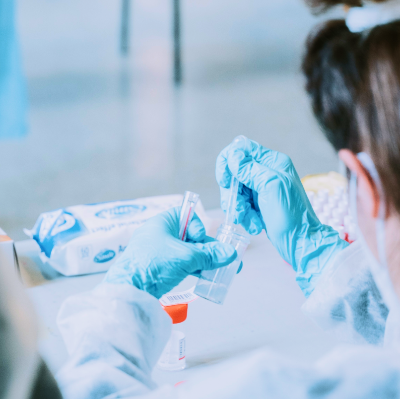
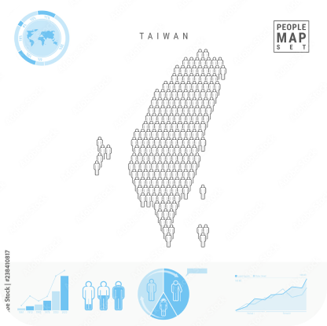

產品介紹
EPS微型RNA套組搭配數據分析提供您定期篩檢、早期發現、早期治療的方案
-

EPS微型RNA專利套組
本專利技術套組同時具備高敏感度、高特異性、低侵入性等優勢，讓高風險病人可以定期接受篩檢，進而達到早期診斷、早期治療的目的。
-

全臺透析檢測數據庫
將篩檢數據以大數據、資料科學等分析技術整理、視覺化，供醫療團隊、病患、政府機構等參考，為對於腎臟疾病之檢測數據有需求之客戶提供整合性數據服務。
-

腎友疾病照護APP
腎友可於APP內取得檢測結果紀錄、觀看機率風險分析圖表、設定定期檢測自動提醒、搜尋腎友知識專欄文章，全方位照護您的健康。
高雄陳先生
自從使用了微型RNA檢測套組，再也不擔心篩檢帶來的不便，篩檢非常快速而且不需要動手術，真的太棒了。
腎友分享